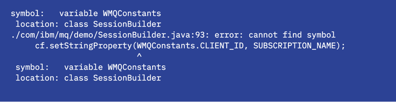
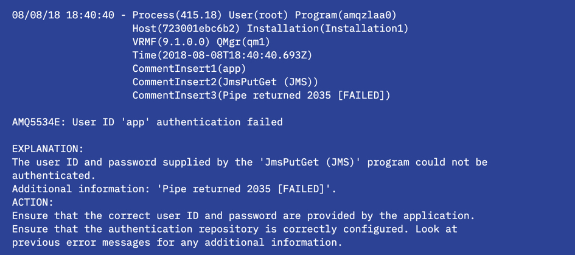

IBM MQ cheat sheet for developers
Here's the scenario: you've just coded your application, compiled it and run it for the first time. Exciting times! Oh no, something isn't quite right, it generated an error message.
Don't panic! It happens even to the very best developers.
It's time to debug, but where should we start?
There are many reasons why an application might fail, so how do we know if it's a problem with messaging code, the MQ API calls, or MQ related objects?
If your error message contains an MQ reason code, for example AMQ2035 2035 MQRC_NOT_AUTHORIZED, then it's likely that something went wrong with the interaction with MQ.
Often, it's obvious from the error message what went wrong, you can fix your code and move on. However, sometimes a little more debug is required. The following sections walk through some basic debug steps and provide some hints and tips to get you moving again.
Common problems or errors¶
We will review some of the common issues that most new MQ application developers will see - from compilation errors to connection problems, and from configuration errors to security issues. We've got you covered.
Hang on a minute, my application hasn't compiled yet!¶
I've been trying to compile my code, but keep getting errors that look something like this:

If your code isn't compiling for any reason, here are the common culprits:
- Do you have a JDK installed in order to use
javac? Try typingjava -versionon a command line to check. - Do you have the
jms.jarandcom.ibm.mq.allclient.jaravailable? - Check your
classpath. Have you typed the location of the jars correctly? - Make sure you are using the correct file directory separators for your operating system in commands.
Help! I got an MQ reason code, what next?¶
I've tried to run my code, but all I get are exceptions like the ones below:

Looking through the exception details can give you lots of information. In the example above you can see the connection information the application is trying to use; queue manager name, connection mode and host name and port. It also gives you some information on what the problem might be. On the seventh line you can see the return code issued for the point the application failed, in this case 2035. A list of MQ reason codes is documented in the IBM MQ Docs.
The IBM MQ queue manager error logs are a great place to get more detail on the problem that occurred. Essentially, we're looking for the queue managers perspective of what went wrong. The error logs are located in the MQ data directory on the system where the queue manager is running.
In Docker containers:
docker exec -ti <container_id> /bin/bash
cd /var/mqm/qmgrs/<your_queue_manager_name>/errors/
On Linux:
cd /var/mqm/qmgrs/<your_queue_manager_name>/errors/
On Windows systems:
cd <mq_installation_path>\QMGRS\<your_queue_manager_name>\ERRORS\
Next we take a look in the error log file. The most recent log entries are added to the bottom of the file. You can use an editor to view the logs or e.g. in Docker or Linux:
cat AMQERR01.LOG
Here you can see an entry from when a 2035 return code was produced:

Connection problems¶
One of the most common areas to find problems is in the initial connection. This would give you a reason code such as MQ Reason Code 2538 MQRC_HOST_NOT_AVAILABLE or 2059 MQRC_Q_MGR_NOT_AVAILABLE. There are a few places errors can be introduced, some initial things to look at are:
-
Check you can ping the host where the queue manager is running.
-
Check that you are using the correct port for the connection to the queue manager.
The MQ Badge Challenge application will use 1414 unless you set the environment variable MQ_BADGE_QM_PORT to be something different. You may need to do this if you cannot use port 1414 for any reason, e.g. you have multiple Docker instances or queue managers running and port 1414 is already being used. To use a different port number, you need to expose a different port. You can then set your port environment variable.
In a Windows terminal:
set MQ_BADGE_QM_PORT=<your_port>On Linux:
export MQ_BADGE_QM_PORT=<your_port> -
Check that you are using the correct host for the connection to the queue manager.
The MQ Badge Challenge application will use 'localhost' unless you set the environment variable MQ_BADGE_QM_HOSTNAME to be something different. You may need to do this if you are running your queue manager in an older version of Docker. The latest version of Docker maps the host ip address to localhost, however Docker Toolkit, which is the current option for running Docker on Windows 7, maps the host ip to the Virtual Machine ip address. To find this IP address you can run the following command in Docker:
docker-machine ipYou can then run this command in a Windows terminal for this host address to be used in your application:
set MQ_BADGE_QM_HOSTNAME=<your_ip_address> -
Check you are using the correct queue manager and channel names in your application connection details. These are case-sensitive. In the MQ Badge Challenge application, the environment variables
MQ_BADGE_QM_NAMEandMQ_BADGE_QM_CHANNELhave also been externalized if you do not wish to use the default values. -
Check that your queue manager is running:
On the system where your queue manager is hosted, run the dspmq command directly in a terminal window:
dspmqFor Docker instances you would use the following command to gain command line access and run dspmq:
docker exec -ti <container_id> dspmqThe output of dspmq is a list of the queue managers on the system and their status:
Configuration errors¶
My application connects, but fails to run?
The main areas to check carefully are if all of your MQ object names match what is expected. For example, the following error is produced when the wrong queue name is given:

In this case the logs are telling us that the queue purchase_queue does not exist. Next steps would be to check your configuration using runmqsc or change your code accordingly. See below for more information on MQSC commands.
Authorization issues¶
Another common area that can cause problems is authentication. Security problems generally return a reason code of AMQ2035 2035 MQRC_NOT_AUTHORIZED. If you see this then you know that a connection has been attempted, but there is likely something wrong with the username or password being used. Looking in the error logs will tell you the User ID that is being authenticated.
In the MQ Badge Challenge application, the username and password are coded into the application to be supplied to the queue manager. Check that the correct values have been set. If you are using anything other than the default application username and password, these values can either be changed in the code we have provided, or the default values can be overridden by setting the environment variables MQ_BADGE_USERNAME and MQ_BADGE_PASSWORD
For more information, read the IBM MQ Docs about client application security.
Publish/subscribe errors¶
Problems with publish/subscribe are usually due to one of the following reasons:
- The subscriber topic strings do not match with the publisher.
- The subscription was created after the publication was sent.
- An error occurred in the publication but was not checked by the publishing application.
These would result in not receiving the messages you were expecting.
Interact with the queue manager using MQSC commands¶
MQSC commands enable you to perform administration tasks to configure your queue manager and work with queue manager objects such as channels and queues.
It can be really helpful to know how to find out about the attributes set on different MQ objects (for example, qmgrs, queues, or channels), particularly if you're not familiar with the default settings. One of the ways to do this is to use MQSC. For more information, see Administration using MQSC commands in the IBM MQ Docs.
For Docker instances you will need command line access in the container running the queue manager:
docker exec -ti <container_id> /bin/bash
From here (or the command line of any platform):
runmqsc <your_queue_manager_name>
When you see the following message, the interface is ready for your input:
You can use the DISPLAY command to explore some of the objects in the MQ Badge Challenge. For example, DISPLAY CHANNEL(DEV.APP.SVRCONN), DISPLAY TOPIC('newTickets') and DISPLAY QUEUE('purchase').
The output of the DISPLAY QUEUE('purchase') command will look something like this:

Interesting attributes to note here are maxdepth, which is the number of messages the queue can hold; and curdepth, which is the number of messages currently held on the queue. If the number of messages on the queue reaches the maxdepth, the application will fail with an MQ Reason Code 2053 MQRC_Q_FULL. A couple of ways to solve this problem would be to increase the default maxdepth of 5000, or to make sure the sending application can handle a reason code of 2053 (MQRC_Q_FULL) by e.g. pausing the application or putting the messages to another queue.
Interact with the queue manager using the MQ Console¶
Another way to interact with your queue managers is with the MQ Console. As well as being able to browse and change object attributes, you can also use the Console to help validate your setup by putting a test message on a queue. (Another way to validate your setup would be to run the samples, such as amqsputc, if you have access to them.)
I can't connect in my browser?
-
You might find that going to
https://localhost:9443/ibmmq/console/doesn't work if you are running your queue manager in Docker. Use the Docker commanddocker-machine ipto check the IP address you should use in place oflocalhost. -
Check if port 9443 has been assigned for the MQ Console to use when you started your container. Make sure you are using the right port number if you changed this for any reason.
TLS issues¶
If you've been making changes to your queue manager key repository, adding or removing certificates, or otherwise changing the security configuration on your queue manager, you might find things aren't working as expected.
In a lot of cases, the SSL cache on the queue manager just needs a refresh. If so, you can fix this simply by using runmqsc to enter the queue manager and refresh the cache.
runmqsc <your queue manager name>
REFRESH SECURITY(*) TYPE(SSL)
Run your application again, and things should work as expected.
If you're running a java application, you can access extra security debugging info by adding these command-line arguments when you run the application:
-Djavax.net.debug=true -Djavax.net.debug=ssl:handshake
Summary¶
This article covered the most common types of errors with IBM MQ applications. Congratulations! You debugged like a pro and everything totally works. Go forth and develop.
For more troubleshooting information:
-
Visit the IBM MQ Docs. for more detailed documentation on problem determination.
-
You can also visit review some best practices for making apps with MQ.